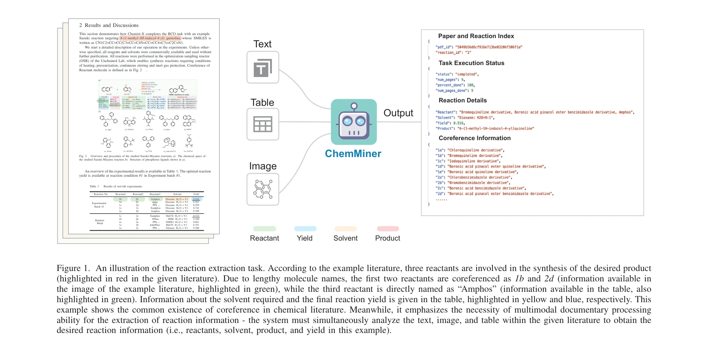
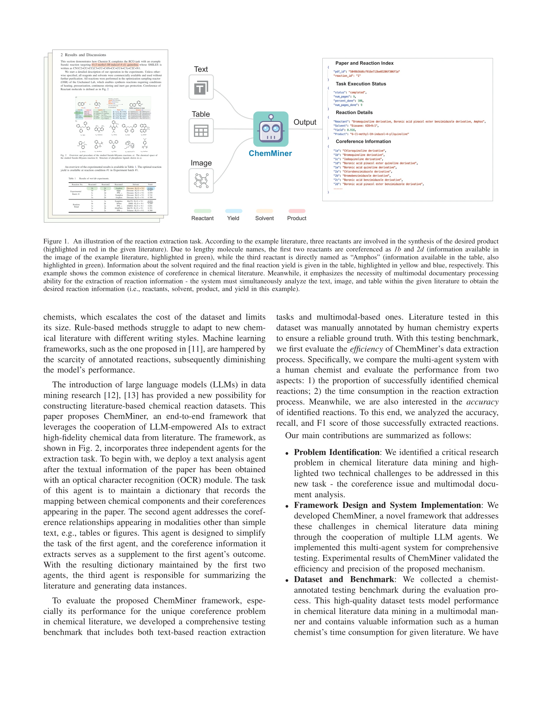

저자: Kexin Chen, Yuyang Du, Junyou Li, Hanqun Cao, Menghao Guo, Xilin Dang, Lanqing Li, Jiezhong Qiu, Pheng Ann Heng, Guangyong Chen | 날짜: 2025-06-30 | DOI: 10.48550/arXiv.2402.12993

Figure 1. An illustration of the reaction extraction task. According to the example literature, three reactants are invo
ChemMiner는 LLM 기반 다중 에이전트 시스템으로 화학 문헌에서 반응 정보를 자동 추출하며, coreference 해결 및 멀티모달 정보 처리를 통해 고품질 화학 데이터셋 구축을 가능하게 한다.

Fig. 2
총평: ChemMiner는 화학 문헌 데이터 마이닝의 실질적 문제를 명확히 정의하고 LLM 기반 다중 에이전트 시스템으로 효과적으로 해결하며, 전문가 주석 벤치마크 공개로 해당 분야의 중요한 기여를 제공한다.